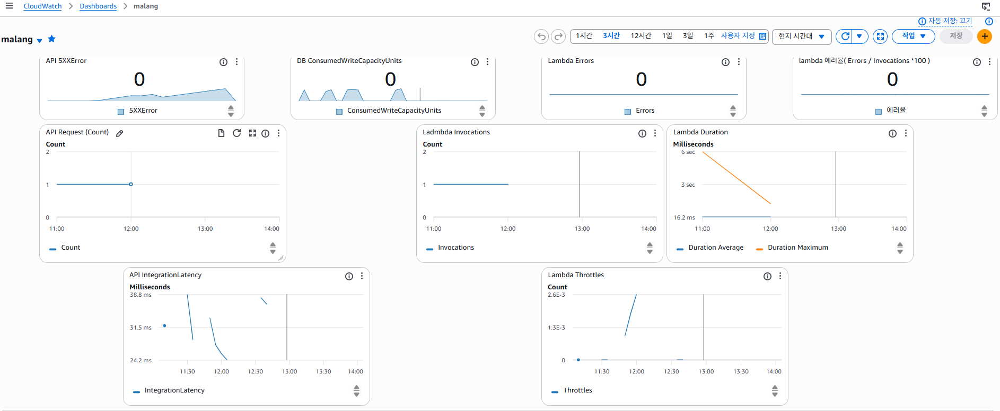
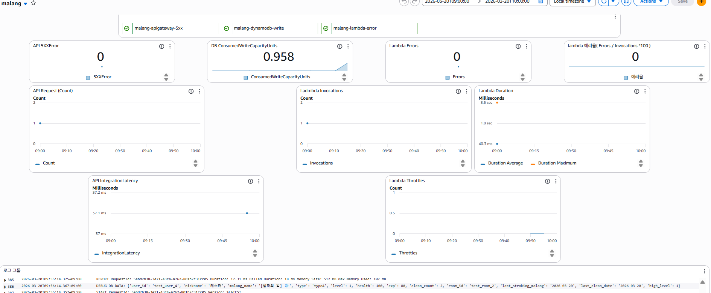

말랑이 메이커
카카오톡을 통해 자신만의 캐릭터 '말랑이'를 육성하는 게임형 챗봇 서비스입니다.
비정형 트래픽에 최적화된 서버리스 아키텍처로 설계해 2026.02 ~ 2026.06 실제 운영했습니다.
보안을 고려한 IAM 설계와 Terraform IaC 기반 자동화로 운영 효율화를 지향했습니다.
서비스 화면
시스템 아키텍처

CI/CD 배포 흐름 · 운영 흐름 · 모니터링 흐름 · IAM 최소권한 전략
테크 스택 및 설계 이유
terraform import로 가져와 코드화.
terraform plan으로 변경 사항 사전 검증 후 GitHub Actions에서 apply 실행
terraform plan 자동 검증으로 적용 전 확인자동화 배포 파이프라인
운영 현황 및 유지보수
| 항목 | 현황 |
|---|---|
| 운영 기간 | 2026.02 ~ 2026.06 (서비스 종료) |
| 사용자 | 지인 베타 운영 · 외부 유입 없음 |
| 월 비용 | 0.03$ |
| 에러율 | 0% (운영 종료 시점 기준) |
- ✅ CloudWatch: Lambda 실행 로그 수집 · 에러/5XX 알람
- ✅ SNS + Slack: 비용 초과 시 실시간 알림
- ✅ AWS Budgets: 월별 비용 임계값 0.03$ / 80% 설정
- 2026.02FastAPI 로컬 개발 → Lambda 서버리스 마이그레이션
- 2026.03CloudWatch 모니터링 추가
- 2026.03SNS 비용 알림 연동
- 2026.03Terraform IaC + GitHub Actions CI/CD 자동화
- 2026.03부하 테스트 중 KeyError 발견 후 예외처리 추가
- 2026.03 EventBridge 웜업 적용으로 Lambda 콜드스타트 개선
- 2026.06 외부 사용자 유입 없이 지인 베타로만 운영되어 서비스 종료
부하 테스트
서버리스 아키텍처의 특성상 트래픽 급증 및 콜드 스타트 상황에서의 안정성을 검증하기 위해 k6 기반 부하 테스트를 수행했습니다.
| 측정 항목 | 측정 방법 | 기대값 |
|---|---|---|
| 평균 응답시간 | k6 http_req_duration avg | 200ms 이내 |
| p95 응답시간 | k6 p(95) | 3,000ms 이내 |
| 에러율 | k6 http_req_failed | 5% 미만 |
| 콜드 스타트 지연 | k6 max + CloudWatch Duration Max | 측정값 확인 |
| Lambda 자동 스케일링 | CloudWatch Invocations | Throttle 미발생 |
| DynamoDB 스로틀링 | CloudWatch ConsumedWriteCapacity | 임계치 미달 |
| 지표 | 결과 |
|---|---|
| 평균 응답시간 | 45ms ✅ |
| p95 응답시간 | 63.84ms ✅ |
| 최대 응답시간 | 1.52s (콜드 스타트) |
| 에러율 | 6.62% ❌ → 버그 발견 |
| Lambda Errors | 0건 ✅ |
| Lambda Throttles | 0건 ✅ |
CloudWatch Logs 필터링으로 KeyError: 'none' 확인.
사망 상태(health: 0) 말랑이의
type이 "none"으로 저장된 유저에 대해 쓰다듬기 예외처리 누락.
사망 상태 체크 로직 추가 후 재배포. 부하 테스트로 실제 운영 버그를 발견하고 수정하는 사이클 경험.

| 지표 | 쓰다듬기 | 똥치우기 |
|---|---|---|
| 평균 응답시간 | 50ms ✅ | 56ms ✅ |
| p95 응답시간 | 70ms ✅ | 75ms ✅ |
| 에러율 | 0% ✅ | 0% ✅ |
| Lambda Throttles | 미발생 ✅ | 미발생 ✅ |

15분 유휴 후 첫 요청 최대 6s → 이후 16ms로 안정화. 서버리스 환경에서 콜드 스타트가 초기 지연에 영향을 미치지만 컨테이너 재사용으로 응답 속도가 빠르게 안정화됨을 확인.
| 지표 | 웜업 전 | 웜업 후 |
|---|---|---|
| 첫 요청 응답시간 | ~6000ms ❌ | < 100ms ✅ |
| p95 응답시간 | 73.12ms | 78.63ms |
| 최대 응답시간 | — | 284ms |
| 에러율 | 0% | 0% ✅ |

트러블슈팅 및 배운 점
카카오톡 메시지를 보내도 응답이 없고 '네트워크 오류'만 표시. 503 에러 코드조차 뜨지 않음.
원인일반 python:3.10-slim 이미지 사용. Lambda는 전용 런타임이 필요하며 Init 단계 자체가 실패해 카카오 측이 연결 거부로 판단.
FROM public.ecr.aws/lambda/python:3.10재발 방지
Lambda 컨테이너 이미지는 반드시 public.ecr.aws/lambda/ 베이스 이미지 사용. GitHub Actions deploy.yaml에
명시하여
수동 배포 실수 방지.
Lambda 내부 500대 에러 발생 시 카카오 측에서 연결 강제 종료. sam logs로 로그 직접 확인.
handler = Mangum(app, lifespan="off")재발 방지
CloudWatch Lambda Errors 알람 설정으로 에러 발생 즉시 Slack 알림 수신. 배포 후 에러율 모니터링 습관화.
기존 빌드 캐시(.aws-sam)가 오염된 상태로 올라간 것.
해결rmdir /s /q .aws-sam sam build --use-container sam deploy재발 방지
GitHub Actions에서 sam build를 자동화하여 로컬 캐시 문제 원천 제거. 수동 배포 프로세스 자체를 없앰.
AWS_REGION은 Lambda 런타임 예약 환경 변수. 사용자가 덮어쓰면 값이 무시되거나 충돌 경고 발생.
Variables: MY_APP_REGION: ap-northeast-2재발 방지
Lambda 예약 환경 변수 목록 숙지. AWS_ 접두사 환경변수 사용 시 공식 문서 확인 습관화.
GitHub Actions에서 terraform apply 시 IAM 유저/그룹 전부 EntityAlreadyExists 에러.
로컬 terraform.tfstate가 .gitignore로 미업로드. Actions가 빈 state에서 시작해 기존 리소스를 새로 만들려다 충돌.
backend "s3" {
bucket = "aws-sam-cli-managed-..."
key = "iam/terraform.tfstate"
}
terraform init -migrate-state
재발 방지
S3 Remote Backend로 state를 중앙 관리. 어떤 환경에서 실행해도 동일한 state 참조. PR 시 terraform plan 자동
검증으로
적용 전 확인.
terraform apply 시 AccessDeniedException: events:PutRule 에러. IAM 정책을 방금 추가했는데도 권한 없음.
Terraform이 IAM 정책 attachment와 EventBridge rule을 병렬로 실행. 정책이 완전히 적용되기 전에 PutRule 호출.
해결resource "aws_cloudwatch_event_rule" "warmup" {
depends_on = [aws_iam_group_policy_attachment.deployer]
}
재발 방지
IAM 정책 변경과 해당 권한을 사용하는 리소스가 함께 추가될 때는 항상 depends_on 명시.
부하 테스트에서 측정한 최대 6s의 콜드스타트 지연이 실제 사용자 입장에서는 응답이 없는 것처럼 느껴지는 경험으로 이어진다는 점을 직접 체감했습니다. 해결 방법을 찾는 과정에서 Provisioned Concurrency와 EventBridge 웜업을 비교했고, 비용 대비 효과를 고려해 웜업을 선택했습니다. 이 경험을 통해 서버리스 아키텍처는 비용 효율성과 응답 안정성 사이에 트레이드오프가 존재한다는 것을 체감했고, 트래픽 패턴이 안정적으로 바뀐다면 EC2 전환도 고려할 수 있다는 판단 기준을 갖게 되었습니다.
현재 Logs와 Metrics는 CloudWatch로 수집 중이지만, 요청이 Lambda 내부에서 어느 구간에서 지연되는지 추적하는 Tracing이 없습니다. AWS X-Ray를 도입하면 Lambda → DynamoDB 각 구간별 응답시간을 추적할 수 있어 병목 구간을 특정할 수 있습니다. 또한 챗봇 게임 특성상 자동화 매크로 사용이 쉬운 구조입니다. X-Ray로 엔드포인트별 호출 패턴을 분석하고, 비정상적인 요청이 집중되는 지점에 매크로 방지 로직을 적용하고 싶습니다.